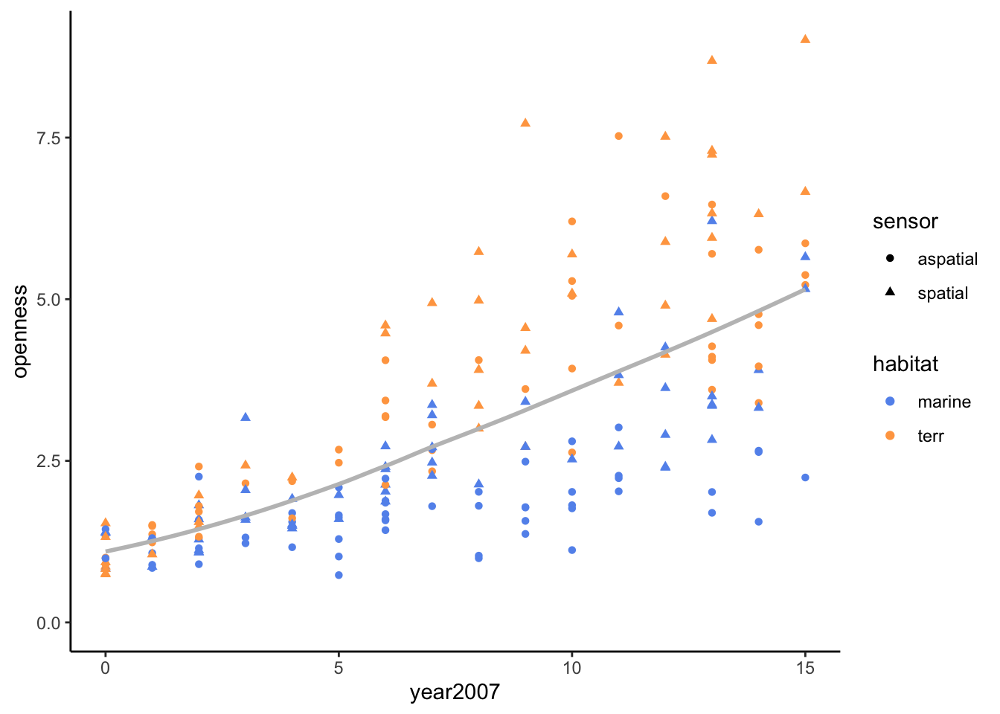
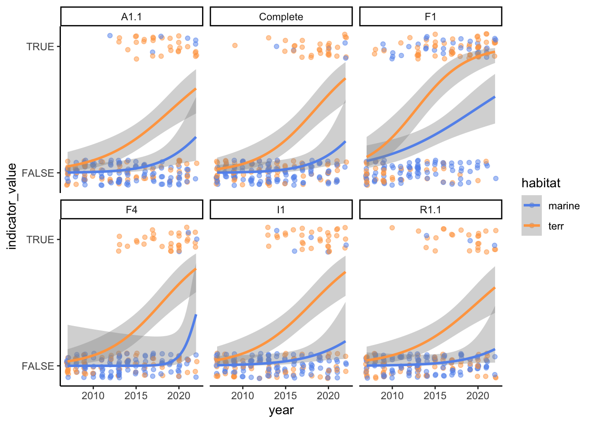

n_papers <- 200
indicators <- c("F1", "F4", "A1.1", "I1", "R1.1", "Complete")
openbiolog <- expand_grid(
year = 2007:2022,
habitat = c("marine", "terr"),
sensor = c("spatial", "aspatial")
) %>%
sample_n(n_papers, replace = TRUE) %>%
mutate(id = factor(seq(n_papers)),
year2007 = year - 2007)Simulated Data and Analysis
Summary
Here we simulate data with the expected statistical properties of our collected and propose an analysis for testing our hypotheses. We will score a subset of papers according to a rubric for assessing open data. Therefore each paper will have multiple response variables (e.g., F1: the data have a DOI or other permanent identifier), all of which are binary. Our predictor variables include year of publication (continuous), spatial or aspatial (binary), and terrestrial or marine (binary). I propose a latent variable approach, where each paper’s “openness” is a latent variable that responds to our predictors. We can’t measure openness directly, so we’ll treat the response variables (F1, F4, A1.1, …) as indicators.
Simulate papers
Our simulated data consists of 200 papers, uniformly distributed over year of publication (2007 - 2022), spatial or aspatial, and terrestrial or marine.
Simulate “openness”
Each paper will have an openness latent variable. I simulate openness using a lognormal distribution so that it’s positive with a long tail. Openness increases over time, and the rate of increase is greater for spatial than aspatial data, and greater for terrestrial than marine. So openness starts low for all papers in 2007, and the rate of increase varies.
# Note habitat (terrestrial or marine) and sensor (spatial or
# aspatial) interact with year2007, but don't have intercepts of their
# own. This ensures all papers early in the study period have low
# openness, then habitat and sensor diverge over time.
X <- model.matrix(~ year2007 + year2007:habitat + year2007:sensor,
data = openbiolog)
betas <- as.matrix(c(
1, # intercept
0.1, # year2007
0.2, # year2007:habitatterr
0.1 # year2007:sensorspatial
), ncol = 1)
open_logsd <- 0.25
openbiolog <- openbiolog %>%
mutate(open_eta = drop(X %*% betas),
open_mu = log(open_eta),
openness = rlnorm(n_papers,
meanlog = open_mu,
sdlog = open_logsd))Note how openness diverges over time by habitat (terrestrial or marine) and sensor type (spatial or aspatial).
ggplot(openbiolog, aes(year2007, openness)) +
geom_point(aes(shape = sensor, color = habitat)) +
geom_smooth(method = "loess",
se = FALSE, formula = y ~ x,
color = "grey75") +
scale_color_manual(values = c("cornflowerblue", "tan1")) +
expand_limits(y = 0) +
theme_classic()
Simulate indicators
I simulate indicators (i.e., the variables from the rubric) based on the paper’s openness (latent variable). Indicators are correlated within papers (e.g., if a paper satisfies F1 then it’s more likely F4 is satisfied, too) but with different expected values (e.g., F1 is on average more likely to be satisfied than F4). Also, indicators are more likely to be satisfied for greater “openness” values. To simulate these properties, I first generate multivariate normal values for indicators by paper. These values are correlated, but unrelated to openness. Then I generate random normal values with a mean equal to “openness”. If the random openness number exceeds the multivariate normal number, then the indicator is set to true.
I fully acknowledge this can’t be the right way to do this!!
# Higher indicator mu means indicator is harder to satisfy
indicator_mu <- c(
F1 = 3,
F4 = 5,
A1.1 = 5,
I1 = 5,
R1.1 = 5,
Complete = 5
)
# Variance-covariance matrix of indicators
indicator_sigma <- toeplitz(c(1.0, 0.5, 0.5, 0.5, 0.5, 0.2))
# Multivariate normal openness thresholds (independent of openness)
indicator_thr <- MASS::mvrnorm(n_papers,
indicator_mu,
indicator_sigma)
# Normal indicator values (dependent on openness)
indicator_val <- t(sapply(openbiolog$openness,
\(x) rnorm(length(indicators),
mean = x, sd = 1)))
# Simulate indicator values
openbiolog[paste(indicators, "thr", sep = "_")] <- indicator_thr
openbiolog[paste(indicators, "val", sep = "_")] <- indicator_val
openbiolog[indicators] <- indicator_val > indicator_thrThe probability of the six indicators is ~0 in 2007, increasing over time. Both habitats begin with low indicator probabilities, which diverges over time.
openbiolog %>%
pivot_longer(all_of(indicators),
names_to = "indicator",
values_to = "indicator_value") %>%
mutate(indicator_value = as.integer(indicator_value)) %>%
ggplot(aes(year, indicator_value, color = habitat)) +
geom_jitter(width = 0.1, height = 0.1,
alpha = 0.5) +
stat_smooth(method = "glm",
method.args = list(family = "binomial"),
formula = y ~ x) +
facet_wrap(~ indicator) +
scale_color_manual(values = c("cornflowerblue", "tan1")) +
scale_y_continuous(breaks = c(0, 1), labels = c("FALSE", "TRUE")) +
theme_classic()
Indicators are correlated with each other.
cor(openbiolog[indicators]) F1 F4 A1.1 I1 R1.1 Complete
F1 1.0000000 0.5210611 0.4672880 0.5394268 0.3481098 0.4404014
F4 0.5210611 1.0000000 0.6102055 0.6194851 0.5846261 0.6102055
A1.1 0.4672880 0.6102055 1.0000000 0.5501914 0.5462648 0.5747697
I1 0.5394268 0.6194851 0.5501914 1.0000000 0.6361206 0.5501914
R1.1 0.3481098 0.5846261 0.5462648 0.6361206 1.0000000 0.5079035
Complete 0.4404014 0.6102055 0.5747697 0.5501914 0.5079035 1.0000000Next steps
How do we use these data to test our hypotheses? I propose a structural equation modeling approach, estimating openness as a latent variable. This tutorial shows how to do that using a Bayesian approach.